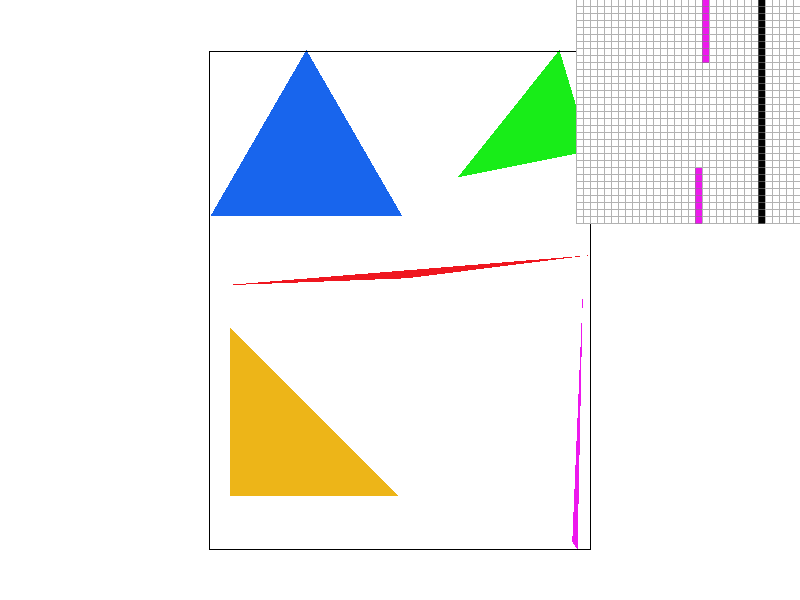
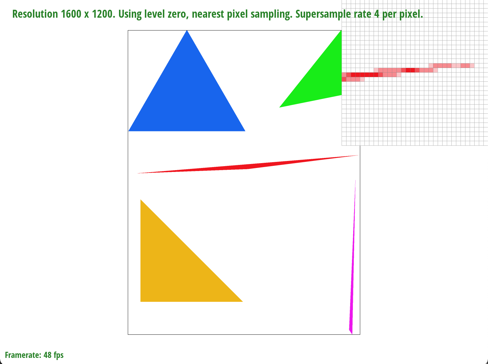
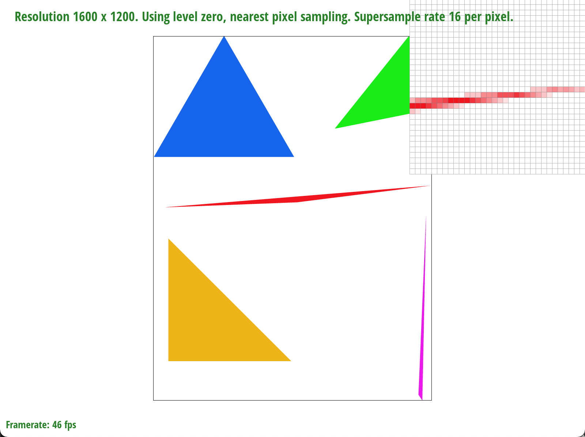
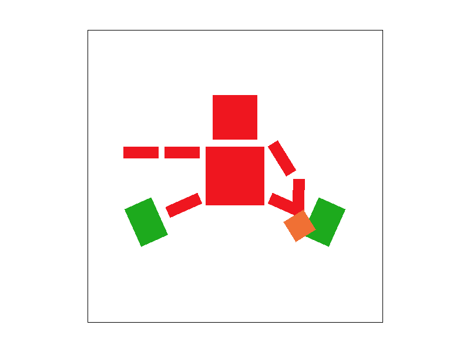
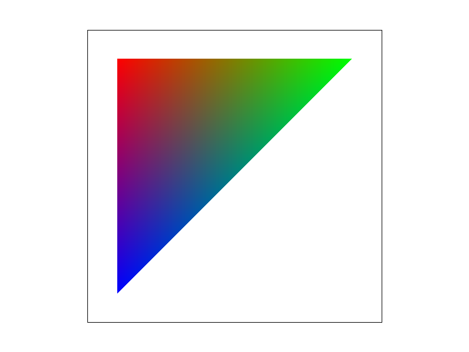

Overview
I think it's really cool that we built a rasterizer. It is very interesting to think about how although everything on a computer technically exists digitally as 1s and 0s, the graph functions that they represent are analog enough to the degree that we need to sample them.
Section I: Rasterization
Part 1: Rasterizing single-color triangles
We rasterize by taking samples at the middle of each pixel. Since a triangle can be represented by the intersection of 3 half-planes, we test each sample point with 3 line tests to determine if that pixel falls on or on the same side of all 3 lines that create the triangle, in which case we fill the pixel.
Our algorithm is no worse than one that checks each sample within the bounding box of the triangle because it is exacty one that checks each sample within the bounding box of the triangle, as that is exactly what we do.

Floaties caused by aliasing.
The above image shows basic rasterization on 4 triangles. Aliasing is evident, especially when zoomed in on the tip of the purple triangle. This is because the tip of that triangle has a width less than 1 pixel wide, and since we only sample in the middle of the pixel at intervals of 1 pixel, it is possible for part of the triangle to exist between our two sample points and not get captured, but a future part that happens to lie on our sample point, resulting gin these floaties.
Part 2: Antialiasing triangles
To perform antialiasing, we supersampled the images.
Originally, the rasterization process involved creating a sample buffer of each pixel which was then
added to the frame buffer. Instead, we created a set of n x n pixels (where n is sqrt(sample_rate))
for each original pixel and used these to generate a much larger image, with dimensions
(width * height * sample_rate). After the large image was generated, we then collected every n x n square
and averaged the colors together to get a single amortized colored pixel, which was put into the frame buffer.
This gave us a frame buffer with the same number of pixels as the original image but now with certain pixels
(especially those near the edges) having less extreme colors, reducing aliasing.
|
Triangle with sample rate of 1
|

Triangles with sample rate of 4.
|

Triangles with sample rate of 16.
|
We see that when we sample with a sampling rate of 1, the image only has either dark red or white pixels,
as there is nothing to average into. This results in an image with more jagged edges.
When we sample with a sampling rate of 4, we begin to have some non-purely dark red or white pixels,
instead having some lighter red pixels that round out the shape. This reduces aliasing.
When we sample at a rate of 16, there is even less aliasing, and even the zoomed in version of the image appears
much more smooth than the other two images.
Part 3: Transforms
Implementing 2D transformations involved creating the 3x3 transformation matricies using homogenous coordinates.

Baller robot.
I increased the scale of the robot's head to be more proportional to their body, rotated the robot's legs to be in a more atheletic stance, scaled their feet to be cool green basketball shoes, and rotated their arm to be able to better grasp the basketball. I noticed that due to the heirarchical representation of the robot, rotating the arm resulted in both the upper and lower arm rotating together.
Section II: Sampling
Part 4: Barycentric coordinates
Barycentric coordinates are a way of representing coordinates within a triangle. Given the 3 vertecies that make up a triangle, each point within the triangle can be represented by the sum of some vector multiplited by each of those vertecies. This is very useful for interpolation, as an example, the triangle below has one red, one green, and one blue vertex. At the red vertex it is 100% red and 0% blue and green, resulting in only red. In the middle of the triangle it is 50% red, 50% blue, and 50% green, resulting in a gray color. The midpoint of the left edge of the triangle is 50% red, 50% blue, and 0% green, resulting in a purple color.
|

Barycentric coordinates example.
|
 Basic test 7.
Basic test 7.
|
Part 5: "Pixel sampling" for texture mapping
Pixel sampling for texture mapping is quite similar to sampling for triangle rasterization. For each pixel of the object, we sample a pixel of the texture and apply it to the object. The two ways of sampling are nearest and bilinear. Nearest takes the floor of the sample point coordinates and applies the texture pixel at those coordinates. Bilinear takes the 4 nearest texture pixels from the sample point and averages them based on distance from the sample point, with the closest one having the highest weight.
 Nearest sampling at 1 sample per pixel.
Nearest sampling at 1 sample per pixel.
|
Nearest sampling at 16 samples per pixel.
|
|
Bilinear sampling at 1 sample per pixel.
|
Bilinear sampling at 16 samples per pixel.
|
Pixel sampling faces the same aliasing issues as seen previously. When the texture resolution and object resolution are the same, nearest sampling works best, as there will be a 1 to 1 mapping between each pixel on the object and each pixel on the texture. Bilinear might not work as well in this case depending on the sampling point chosen, as if we choose the corner of a pixel it will average the 4 nearest, resulting is a less clear texture when compared to the nearest sampling, while requiring 4 times as many samples.
When the texture resolution and object resolution are different, bilinear will work better than nearest. If the texture resolution is greater than the ojbect resolution, we get minification, nearest sampling will skip multiple texture pixels between each object pixel, resulting is a really 'jumpy' texture. If the texture resolution is less than the object resolution, we get magnification, nearest sampling will then use the same texture pixel for multiple object pixels, resulting in very jagged lines. In both these cases, bilinear sampling will create a smoother outcome.
Part 6: "Level sampling" with mipmaps for texture mapping
Section III: Art Competition
If you are not participating in the optional art competition, don't worry about this section!
Part 7: Draw something interesting!